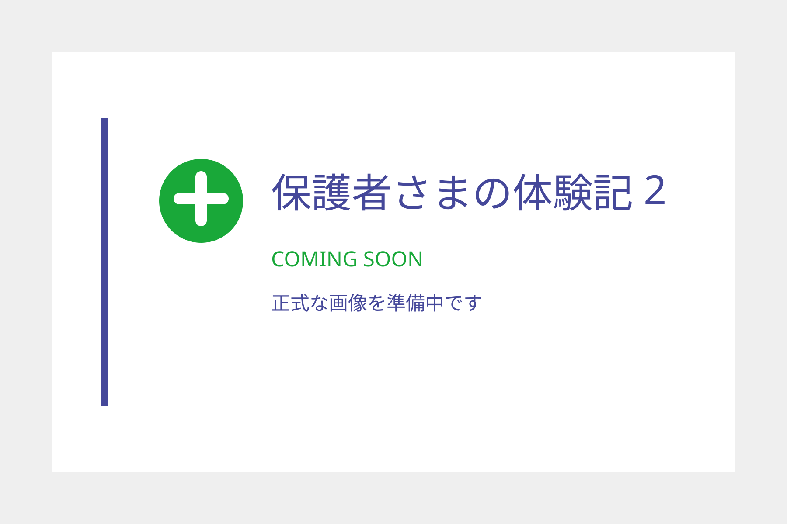

POINT 1
対話で理解を確かめる
会話と手元を見ながら理解度を確認し、分からない部分は説明方法を変えて進めます。


一律の進め方ではなく、お子さまの反応を確かめながら授業を調整します。
会話と手元を見ながら理解度を確認し、分からない部分は説明方法を変えて進めます。

教材の難易度、予習と復習の配分、進度、宿題量を、お子さまの様子に合わせて調整します。

毎回の授業内容、理解度、次の課題を授業報告書で保護者さまへ共有します。

対面授業とオンライン授業から、ご家庭に合う形を選べます。
自宅から受講できます。
授業だけで終わらず、日々の学習と保護者さまへの共有まで支えます。
目標と理解度に合わせて、教材や進度を調整します。
授業内容、理解度、次の課題を毎回共有します。
宿題の量と内容を相談し、無理のない形で日割りにします。
最低年3回、対面・オンライン・電話・LINEで行います。

学校行事や急な体調不良のときは、条件の範囲内で別日に振り替えられます。
ご紹介者さまとご入会者さま、それぞれに特典をご用意しています。
保護者さま向けの受験情報講座や、お子さま向けのアート教室を行います。

大手個別学習塾の元教室長。保護者個人面談を多数実施し、中学受験・高校受験を控えるお子さまを中心に、一人ひとりに合う学び方を提案してきました。
説明方法や教材を一つに決めつけず、お子さまの「分かる」を積み重ねます。


通ってくださっている保護者さまから、授業についてお声をいただきました。
年長から就学準備、小学1年生から個別指導を受講する保護者さまより
受講前によくいただくご質問をまとめました。
ご相談いただけます。WISC等の検査結果がある場合は、保護者さまの同意のもとで学習計画の参考にします。
イーナは医療・療育機関ではなく、診断や検査結果の医学的な判定は行いません。
診断の有無にかかわらずご相談いただけます。ノート、テスト、学校の先生のコメント、体験授業での様子を参考にします。
安定したWi-Fi環境と、パソコン・タブレット・スマートフォンのいずれかをご用意ください。教材については事前にご相談します。
学校行事や急な体調不良の場合、授業開始2時間前までに保護者さまからご連絡いただければ、対面授業の空きコマまたはオンライン授業へ振り替えます。
 スマートフォンで読み取れます
スマートフォンで読み取れます